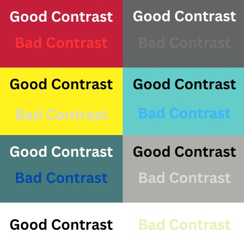

Текст — основной интерфейс
Даже самый выразительный дизайн проигрывает, если текст нечитаем. На экране типографика работает иначе, чем в печати: пиксельная сетка, подсветка, разное разрешение и расстояние до глаз меняют восприятие шрифта.
Ключевые отличия экранной типографики:
- Антиалиасинг. Браузер сглаживает края букв. Тонкие шрифты «плывут» и читаются хуже.
- Размер. Минимум 16px для основного текста.
- Длина строки. Оптимально 50–75 символов.
- Межстрочный интервал. 1.4–1.6 от размера шрифта — комфортный ритм.
Иерархия заголовков
Иерархия — это порядок, в котором глаз читает страницу. Заголовки разных уровней (H1 → H2 → H3) создают структуру и помогают сканировать контент.
- Один H1 на страницу. Главная тема. Остальное — подзаголовки.
- Размер и вес. H1 крупнее H2, H2 крупнее H3.
- Контраст. Заголовок отличается не только размером, но и цветом или насыщенностью.
- Не пропускайте уровни. H2 → H4 ломает логику для скринридеров и SEO.
Колористика интерфейса
Цвет — это не только эстетика. Он управляет вниманием, обозначает состояния и передаёт характер бренда. Хорошая палитра состоит из ролей:
- Фон. Основа. Обычно нейтральный.
- Текст. Контрастный к фону.
- Акцент. Один-два цвета для кнопок и важных элементов.
- Семантика. Зелёный — успех, красный — ошибка, жёлтый — предупреждение.

Психология цвета
Цвет вызывает ассоциации, но они зависят от контекста и культуры. В интерфейсах важно не «любимый цвет дизайнера», а задача:
- Синий — доверие, стабильность. Финансы, B2B.
- Зелёный — рост, безопасность, экология. Также сигнал «всё хорошо».
- Красный — энергия, срочность, ошибка. Мощный акцент.
- Оранжевый — дружелюбие, действие. Хорош для CTA.
- Жёлтый — внимание, оптимизм. Требует осторожности с контрастом.
- Фиолетовый — креативность, премиальность.
Тёмные и светлые темы
Современные интерфейсы часто поддерживают две темы. Это не инверсия цветов: контрасты, тени и акценты работают по-разному.
- Светлая тема. Светлый фон, тёмный текст. Тени мягкие, акценты яркие.
- Тёмная тема. Тёмный фон, светлый текст. Чистый белый на чёрном утомляет — используют мягкие оттенки.
- Акценты. В тёмной теме яркие цвета могут «светиться» — их приглушают.
- Семантика. Красный и зелёный на тёмном фоне меняют восприятие — проверяйте контраст отдельно.
Цвет кнопки может влиять на конверсию. Но не существует «универсально лучшего» цвета — всё проверяется A/B-тестом на конкретной аудитории.
Итог
Типографика и цвет определяют, насколько интерфейс удобен и выразителен. Шрифт задаёт ритм чтения, цвет — настроение и акценты. Вместе они превращают набор блоков в цельный визуальный язык.